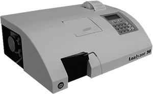

ANALIZER 90
Equipo semiautomatizado de química clínica
con diferentes programaciones

CARACTERÍSTICAS:
- Fotómetro fiable y robusto, semiautomático para química clínica.
- Configuración estándar con 7 filtros ópticos, con lámpara halógena.
- Lectura: mono o biocromática.
- Software con capacidad de hasta 200 programas.
- Memoria de 200 análisis con timer.
- Programación mediante teclado o display.
- Display digital de 2 líneas con 16 columnas.
- Puerto serie RS 232.
- Impresora térmica de 40 columnas.
- Aspiración automática de muestra a través de una bomba peristática de precisión.
- Sistema de lectura: DO, CONC, punto final, tiempo fijo y cinético, tiempo dependiente, lineales y no lineales, hasta 8 puntos, con curvas de calibración de 2 a 8 puntos.
DATOS COMPLEMENTARIOS: Para mayores informes comunicarse a:
ACCUTRACK, S.A. DE C.V.
Teléfonos: (55) 5524-4481, 5524-2644, 5524-4575
e-mail: ventas@accutrack.com.mx
www.accutrack.com.mx